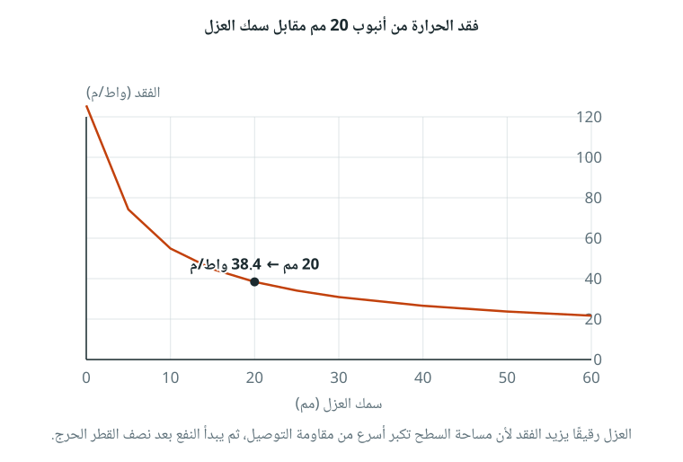

نصف قطر العزل الحرج: حين يزيد العزل الخسارة
غيّر نصف قطر الأنبوب والسمك والبوصل ومعامل الحمل، وتابع نصف القطر الحرج والفقد على المقياس.
المقياس يبدأ عند نصف قطر 20 مم وعزل 20 مم وبوصل 0.05 وحمل 10.
افتراضات النموذج والمصدر
q = ΔT / (ln(r₂/r₁)/(2πk) + 1/(2πr₂h))
أسطوانة طويلة بحالة مستقرة
فرق حرارة ثابت 100 كلفن بين السطح الداخلي والوسط
حمل حراري طبيعي بمعامل ثابت
لا إشعاع ولا مقاومة تلامس بين الأنبوب والعزل
Critical radius of insulation for cylinders — The Engineering ToolBox
Thermal conductivity of insulation materials — The Engineering ToolBox
قانون الحدس يقول: عزل أكثر = فقد أقل. هذا صحيح للجدران المسطّحة، وخاطئ للأسطوانات الرفيعة. كل طبقة عزل تضيف مقاومة توصيل (جيدة) وتزيد نصف قطر السطح الخارجي وبالتالي مساحة الحمل (سيئة للحفظ).
فإذا كان نصف القطر الأساسي أصغر من k/h، فإن أول طبقة عزل تزيد الخسارة حتى نصف القطر الحرج، ثم تبدأ الفائدة بعدها. في الحالة الافتراضية (أنبوب 20 مم، عزل بوصل 0.05، حمل 10) يكون نصف القطر الحرج 5 مم فقط — أصغر من نصف قطر الأنبوب، فأي عزل هنا يُنقص الفقد من أول مليمتر.
لكن جرّب سلكًا قطره 1 مم: نصف القطر الحرج حينها 5 مم، فالعزل حتى 5 مم يزيد الخسارة. ولهذا تُعزل الأسلاك الكهربائية للسلامة لا لتوفير الحرارة — ولأن العزل يخفض حرارة الغلاف فيمنع الحرق، وإن زاد الفقد الحراري.
كيف تعمل الظاهرة؟
المقاومة الكلية = توصيل في العزل + حمل على السطح الخارجي. الأولى تصعد لوغاريتميًّا مع نصف القطر لأن مسار التوصيل يطول، والثانية تنزل عكسيًّا مع نصف القطر لأن مساحة السطح تكبر. مجموعهما دالة لها حد أدنى عند اشتقاق يساوي صفرًا، وهو بالضبط r=k/h.
العلاقة بالأرقام
المعادلة: q = ΔT / (ln(r₂/r₁)/(2πk) + 1/(2πr₂h)). عند نصف قطر الأنبوب 20.00 مم، سمك العزل 20.00 مم، بوصل العزل 0.05 واط/م·ك، معامل الحمل الخارجي 10.00 واط/م²·ك، يعطي الحساب: نصف القطر الحرج = 5.0 مم؛ معامل الحمل الخارجي = 10 واط/م²·ك؛ الفقد لكل متر طول = 38.4 واط/م. حالة «سلك رفيع بلا عزل» (نصف قطر الأنبوب 5.00 مم، سمك العزل 0.00 مم، بوصل العزل 0.10 واط/م·ك، معامل الحمل الخارجي 5.00 واط/م²·ك): نصف القطر الحرج = 20.0 مم؛ معامل الحمل الخارجي = 5 واط/م²·ك؛ الفقد لكل متر طول = 15.7 واط/م. حالة «نفس السلك مع عزل» (نصف قطر الأنبوب 5.00 مم، سمك العزل 15.00 مم، بوصل العزل 0.10 واط/م·ك، معامل الحمل الخارجي 5.00 واط/م²·ك): نصف القطر الحرج = 20.0 مم؛ معامل الحمل الخارجي = 5 واط/م²·ك؛ الفقد لكل متر طول = 26.3 واط/م. هذه أمثلة مولدة من دالة الحساب نفسها؛ وليست قياسات فعلية أو مواصفات لجهاز تجاري.
مفاهيم متقاربة
يُخلط بين «نصف القطر الحرج» و«السمك الحرج»: الأول مقياس نصف قطر السطح الخارجي لا سمك الطبقة، ولهذا يعتمد على نصف قطر الأنبوب الأصلي. ويُخلط بين العزل الحراري والكهربائي: الثاني للسلامة وكبح حرارة الغلاف، وقد يزيد الفقد الحراري عن قصد دون أن يكون ذلك خطأً تصميميًّا.
حدود التطبيق
المعادلة لأسطوانة طويلة بحالة مستقرة وحمل طبيعي بمعامل ثابت. لا تنطبق على الكرة إلا بمعامل 2k/h، ولا على أنظمة غير مستقرة أو ذات توليد داخلي. وتفشل عند وجود إشعاع مؤثر لأن معامل الحمل الفعّال يصير دالّة في الحرارة لا ثابتًا.

| الكمية | القيمة | المصدر |
|---|---|---|
| نصف القطر الحرج — الحالة الافتراضية | 5.0 مم | [1] |
| معامل الحمل الخارجي — الحالة الافتراضية | 10 واط/م²·ك | [1] |
| الفقد لكل متر طول — الحالة الافتراضية | 38.4 واط/م | [1] |
المصادر
- 1 Critical radius of insulation for cylinders — The Engineering ToolBox. www.engineeringtoolbox.com/insulation-temperatures-d_922.html · اطُّلع عليه 2026-11-19
- 2 Thermal conductivity of insulation materials — The Engineering ToolBox. www.engineeringtoolbox.com/thermal-conductivity-d_429.html · اطُّلع عليه 2026-11-19
راجعه: عبدالله الهويدي — مراجعة في تطبيق انفراد · 2026-11-19 · آخر تحديث 2026-11-20
رجوع إلى المعمل